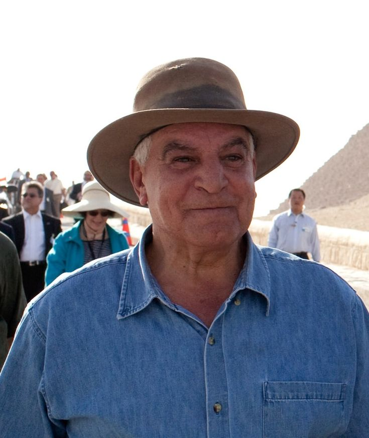

Biography
Zahi Hawass, born on May 28, 1947, in Damietta, Egypt, is a world-renowned archaeologist and Egyptologist. He is best known for his work in the field of Egyptian archaeology and his efforts to preserve Egypt's cultural heritage.
Early Life
Zahi Hawass grew up in a small village in Egypt. From a young age, he was fascinated by ancient history and archaeology. He pursued his passion by studying archaeology at Cairo University, where he earned his bachelor's degree. He later obtained his Ph.D. in Egyptology from the University of Pennsylvania.
Career
Hawass began his career as an inspector of antiquities in Egypt. Over the years, he rose through the ranks to become the Secretary-General of the Supreme Council of Antiquities and later the Minister of Antiquities. He has led numerous excavations and discoveries, including the tombs of the pyramid builders and the Valley of the Golden Mummies.
Contributions to Archaeology
Hawass is known for his efforts to repatriate stolen Egyptian artifacts and his work in promoting Egypt's cultural heritage globally. He has also been instrumental in using modern technology, such as CT scans, to study mummies and uncover new insights into ancient Egyptian civilization.
Legacy
Zahi Hawass is a global icon in the field of archaeology. His work has inspired countless people to explore and appreciate the rich history of ancient Egypt. He continues to be a vocal advocate for the preservation of Egypt's cultural heritage.
Personal Life
Zahi Hawass is married and has two children. He is known for his charismatic personality and his ability to communicate complex archaeological concepts to the general public. He has appeared in numerous documentaries and TV shows, making him a household name in the world of archaeology.